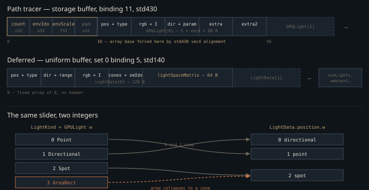

Monograph · Tree · ← Module hub · Lights dual packing
materials
Lights dual packing
GPULight SSBO (64 lights) vs the deferred LightGpu table (65,536).
The same integer means two different lights
A scene author sets one thing: a `Light` component whose `LightType` runs Point = 0, Directional = 1, Spot = 2, AreaRect = 3.
enum class LightType : uint8_t { Point, Directional, Spot, AreaRect };ohao/ecs/components.hpp:58Render extraction resolves each one against its world transform into a `LightDesc` whose `LightKind` repeats those four and adds a fifth, `EmissiveProxy`:
enum class LightKind : uint32_t { Point, Directional, Spot, AreaRect, EmissiveProxy };ohao/render/scene/render_scene_types.hpp:112The raster buffer does not hold only the authored lights. Model upload also derives one point-like stand-in per model whose material carries an emissive texture (`EmissiveProxyLight`, resolved to `EmissiveProxy`), and the light table writes it into the deferred buffer after the real lights, as a point light at the mesh centre:
light.position = glm::vec4(d.position, 1.0f); // type 1 = point lightohao/render/scene/light_table.cpp:132The ray-traced buffer leaves them out. The path tracer meets the emissive surfaces themselves, and a stand-in beside them would count their light twice:
// meets the surfaces themselves, and a proxy light beside them would count their light twice.ohao/render/scene/light_table.cpp:177The path tracer takes the kind unmodified — the enum value is cast straight to float and dropped into `positionAndType.w`:
gl.positionAndType = glm::vec4(d.position, static_cast<float>(static_cast<uint32_t>(d.kind)));ohao/render/scene/light_table.cpp:154The deferred pipeline does not. Its `LightData` uses the classic raster convention, 0 = directional, 1 = point, 2 = spot:
alignas(16) glm::vec4 position; // xyz = position, w = type (0=dir, 1=point, 2=spot)ohao/render/scene/render_scene_types.hpp:25so `LightTable::set` swaps 0 and 1 on the way in, and gives AreaRect type 3 in both:
const int deferredType = d.kind == LightKind::Point ? 1ohao/render/scene/light_table.cpp:88The deferred frame lights a type 3 light as the path tracer does, as a rectangle of uniform radiance `I / (4 pi r^2)` emitting one-sided toward `edge1 x edge2`, with no range and no `1/d^2`, through OpenPBR's base like every other light (`evaluateRect` in `includes/lighting/clustered_lights.slang`). Its diffuse lobe is evaluated toward the polygon's vector form factor $J$ and scaled by the rectangle's exact irradiance $n\cdot J$, the edge integral; its specular lobe at the representative point, the reflection ray where it meets the rectangle, widened by the rectangle's size as a disc of equal area:
float3 evaluateRect(Surface s, float3 center, float3 e1, float3 e2, float3 Le, OpenPBRTables t)shaders/includes/lighting/clustered_lights.slang:75Clustered lighting lists a rectangle in every froxel, as it does a directional light: with no range there is no sphere to cull by.
if (l.position.w < 0.5 || l.position.w > 2.5)shaders/compute/light_cluster.slang:69An unlit scene stays unlit. With no light in the raster list — no authored light and no emissive stand-in — the deferred frame, like the path tracer, is lit by the environment alone (the constant ambient without one); `setFrameLights` makes up no light:
m_deferredRenderer->setLights(lights, version, m_ambientOverride.value_or(0.35f));ohao/gpu/vulkan/buffer_setup.cpp:20
`positionAndType.w` carries the `LightKind` enum; `LightData.position.w` does not. Read either code with the other table in hand and every point light becomes a sun.
Eighty bytes and sixty-four
The ray-traced pack is the small one. `GPULight` is five `vec4`s, std430, with a static assert pinning the size so a stray member cannot silently desynchronise it from the shader mirrors:
// 5 vec4s = 80 bytes per light, std430 layoutohao/render/rt/gpu_light.hpp:9`LightData` is 128 bytes on the host, and 64 of those are a per-light shadow matrix that no shader reads: the light table writes identity into every slot, and the GPU copy drops it. `LightClusters` uploads each light as a 64-byte `LightGpu`, the four `vec4`s alone:
alignas(16) glm::mat4 lightSpaceMatrix; // Transform to light space for shadow mapping (64 bytes)ohao/render/scene/render_scene_types.hpp:29{"name": "LightGpu", "doc": "one raster light of the light table (core/deferred_lighting.slang, compute/light_cluster.slang)",shaders/shared/layout.json:274Both buffers are capped, and the caps are different kinds of number. The raster table holds `MAX_LIGHTS = 65536`, and both loops that fill it — authored lights first, then the emissive stand-ins — `break` once it is full, with a warning logged once. It is a storage buffer per frame slot, and the lighting pass reads only the lights in a pixel's froxel (the clustered-lighting unit), so the count costs per pixel what reaches the pixel, not what the scene holds:
constexpr uint32_t MAX_LIGHTS = 65536;ohao/render/scene/render_scene_types.hpp:34The RT side has a real cap too. The device buffer is sized as the 16-byte header plus `MAX_GPU_LIGHTS = 64` lights, and a longer list is truncated with a one-time log, so the estimator's light count never exceeds what the buffer holds:
static constexpr uint32_t MAX_GPU_LIGHTS = 64;ohao/render/rt/gpu_light.hpp:20gpuLights.resize(MAX_GPU_LIGHTS);ohao/render/scene/light_table.cpp:185The obvious alternative is one union struct feeding both pipelines, and the byte counts say why it was not taken: a shared layout drags the 64-byte shadow matrix into a buffer the raygen re-reads once per next-event sample, and drags area edges and a sampling radius into the record every lit pixel reads once per light in its froxel, and the clustering kernel once per light per froxel. Two packs cost a remap function. One pack costs bandwidth in the hot loop of both pipelines.
The sixteen bytes std430 hands over
`GPULight` has `vec4` alignment, so std430 rounds the array base of any buffer that begins with a `uint` counter up to 16 regardless. The light table spends all four of those words: the light count, the bindless environment-map index, an HDRI intensity scale, and a flag saying whether any TLAS instance has an alpha material (the rays then stop forcing opacity):
const uint32_t header[4] = {static_cast<uint32_t>(m_rt.size()), m_envMapTexIdx,ohao/render/scene/light_table.cpp:230The environment-map slot defaults to the no-texture sentinel, `0xFFFFFFFF` — the value every reader tests for "no HDRI":
uint32_t m_envMapTexIdx{kNoTexture};ohao/render/scene/light_table.hpp:78Binding 11 is read in three shapes. The reference path tracer, `rt/path_tracer.slang`, declares it as a plain `float4` array and reads each header word by its index, the scale with the same `<= 0` means 1 rule as the miss shader:
float envScale() { const float s = lightData[0].z; return s > 0.0 ? s : 1.0; }shaders/rt/path_tracer.slang:151bool alphaRays() { return asuint(lightData[0].w) == 1u; }shaders/rt/path_tracer.slang:152The realtime raygen names all four words in a GLSL block, the last as `alphaRays`; `pt_miss.rmiss`, the realtime profile's miss shader, names the first three and calls the fourth `_pad`, because it is the stage that samples the environment and needs only the index and the scale:
uint alphaRays; // 1: an instance is non-opaque (alpha-tested or blended material): pt_anyhit decidesshaders/rt/pt_raygen_realtime.rgen:60payload.color = texture(textures[nonuniformEXT(lightBuf.envMapTexIdx)], uv).rgb * envS;shaders/rt/pt_miss.rmiss:69That side channel is owned by the table, not by the upload. The index, the scale and the flag are held as members, their setters mark the table dirty only when the value actually changes, and the header is rewritten whole with the stored values whenever anything is dirty. A light edit therefore re-uploads the header with the sky still in it, and there is no re-stamping step to forget.
What a light's radiance is
`dirAndParam.w` is overloaded: the packer fills it with the sphere radius, then, two lines later, overwrites it with the inner cone angle in degrees when the kind is Spot. A spot's radius moves to `extra2.y`.
float dirParam = d.radius;ohao/render/scene/light_table.cpp:156glm::vec4 dirAndParam; // xyz=direction, w=param (sphere:radius, spot:innerAngle)ohao/render/rt/gpu_light.hpp:13Both tracers resolve the overload before using a radius: the reference in `loadLight`, the realtime raygen through `ptLightRadius` in `pt_lights.glsl`. The radius is clamped at 1 cm.
l.radius = max(l.type == 2u ? f.y : d.w, 0.01);shaders/rt/path_tracer.slang:187The reference gives each kind the radiance the deferred frame measures. Write $c$ and $I$ for the packed colour and intensity, $r$ for the radius, $W(d)=\big(1-(d/\text{range})^4\big)^2$ clamped for the range window, and $s$ for a spot's cone falloff toward the shading point:
A sphere of radiance $cI/\pi r^2$ has radiant intensity $cI$ (its projected area is $\pi r^2$), so a point light lights a surface $d$ away with $cI/d^2$ whatever its radius: growing the sphere softens its shadow without brightening it. A sun is a direction and an irradiance, with no radius in it. The area light keeps its own convention, uniform radiance over the rectangle with $r$ as a parameter, which both renderers share.
float3 le = l.radiance / (kPi * r * r);shaders/rt/path_tracer.slang:198s.radiance = l.radiance / (4.0 * kPi * l.radius * l.radius);shaders/rt/path_tracer.slang:267The realtime raygen reaches the same irradiances through `ptEmitterArea`, which divides by $\pi r^2$ for a sphere, $4\pi r^2$ for a spot and an area light (whose estimator weights carry $4\pi r^2$ back), and 1 for a sun:
float ptEmitterArea(float type, float r) {shaders/includes/rt/pt_lights.glsl:39One light per shadow ray, and the density that pays for it
Each next-event sample picks a single light uniformly rather than looping over all of them. With $N_\ell$ entries in the buffer the selection density is $1/N_\ell$. The reference folds it into each sample's solid-angle density: a sphere is sampled uniformly over its cone of directions, a rectangle uniformly over its area,
where $\sin\theta_\text{max}=r/d$ to the sphere's centre, $A$ is the rectangle's area in `extra2.w` and $\theta_\ell$ the angle at the rectangle between its normal and the direction back. The contribution is $f\cos\theta_s\,L\,w/p$, with $f$ OpenPBR's BSDF and $w$ the MIS weight below. A sun is a delta: no density, its irradiance divided by the choice alone.
s.pdf = choose / (kTwoPi * oneMinusCosMax);shaders/rt/path_tracer.slang:290s.pdf = choose * d2 / (cosL * l.area);shaders/rt/path_tracer.slang:266s.radiance = l.radiance / choose; // a delta: no density to weighshaders/rt/path_tracer.slang:252Point, spot and area lights are also meshes (`RenderScene`'s emitter instances), and a reference bounce ray traces the emitter mask with the scene, so it can meet a light that light sampling also finds. Each such light is weighed by the power heuristic on both sides. The table learns which lights have a mesh from `RenderScene`, which passes their indices in the RT buffer; at upload the table flags a sphere in `extra2.z` and a rectangle in `extra.w`:
lights.setEmitterLights(rtIndex);ohao/render/scene/render_scene.cpp:432if (rt[i].positionAndType.w > 2.5f) rt[i].extra.w = 1.0f; // a rectangleohao/render/scene/light_table.cpp:237l.emitter = l.type == 3u ? e.w > 0.5 : (l.type != 1u && f.z > 0.5);shaders/rt/path_tracer.slang:189A light without a mesh (emitters off, or a light whose mesh could not be built) is found by light sampling alone, at full weight; a sun always is:
const float w = ls.pdf > 0.0 ? (ls.mis ? powerHeuristic(ls.pdf, base.pdf(wo, wi, tables)) : 1.0) / ls.pdf : 1.0;shaders/rt/path_tracer.slang:599On the other side, the emitter instance carries its light's index, and the bounce ray that hits it evaluates that light's radiance toward the ray's origin and its light-sampling density for that direction:
add = throughput * le * powerHeuristic(lastPdf, lightPdf);shaders/rt/path_tracer.slang:506The realtime raygen keeps the older arrangement: uniform selection with the factor written out as `* float(lightBuf.lightCount)`, its bounce rays tracing `kRayMaskScene` alone so they never meet an emitter.
vec3 directContribution = Le * (diff + spec) * NdotL * weight * float(lightBuf.lightCount);shaders/rt/pt_raygen_realtime.rgen:631The reference's shadow ray leaves from the hit point pushed 10⁻³ along the geometric normal, with `TMin` 10⁻⁴, and stops 10⁻³ short of the light: at the sphere's near side along the sampled direction, at the sampled point of a rectangle, at 10⁴ for a sun.
s.dist = max(dc - sqrt(max(r * r - d2 + dc * dc, 0.0)), 0.0) - 1e-3; // to the sphere's near sideshaders/rt/path_tracer.slang:289Type codes without names
No header names the light-type codes for either table. The raster readers compare `position.w` against bare integers — directional 0, point 1, spot 2, area 3:
type = int(light.position.w);shaders/includes/lighting/clustered_lights.slang:174The reference path tracer does the same against `GPULight`'s codes, where 1 is directional and 0 a point light. The two tables use the same small integers for different kinds, so a reader that borrows a constant from the other table inverts the two most common light types.
Contracts
- `positionAndType.w` is the raw `LightKind`; `LightData.position.w` is the remapped raster code. Anything reading a light type must know which buffer it came from.
- `dirAndParam.w` means radius for sphere/directional/area and inner cone angle in degrees for spot; a spot's radius is `extra2.y`. Every reader resolves the radius through `loadLight` or `ptLightRadius`, never from `dirAndParam.w` alone.
- Emissive stand-ins are in the raster table only. Adding them to the RT buffer counts an emissive surface's light twice in the path tracer.
- The raster table holds 65,536 lights and the RT SSBO 64; both truncate with a one-time log. Past the eighth shadow caster a raster light renders unshadowed (no RT channel), and a froxel keeps at most 256 lights, the overflow reported as `lightsOverflow` in `render.stats`.
- The environment-map index, intensity scale and alpha-rays flag are members of the light table, and the 16-byte header is rewritten whole whenever any of them, or the light list, changes. Code that writes binding 11 by any other route would have to reproduce that header.
- The emitter flags (`extra2.z`, `extra.w`) must name exactly the lights with an emitter mesh in the TLAS. A flagged light without a mesh is under-counted (its MIS weight assumes a bounce ray could find it); an unflagged light with one is counted twice.
- Both tracers select one light uniformly. Replacing uniform selection with importance sampling means replacing the $1/N_\ell$ in the reference's densities, and the realtime raygen's `lightCount` factor, with the real inverse density.
Source files
ohao/ecs/components.hppohao/render/scene/render_scene_types.hppohao/render/scene/light_table.cppshaders/includes/lighting/clustered_lights.slangshaders/compute/light_cluster.slangohao/gpu/vulkan/buffer_setup.cppohao/render/rt/gpu_light.hppshaders/shared/layout.jsonohao/render/scene/light_table.hppshaders/rt/path_tracer.slangshaders/rt/pt_raygen_realtime.rgenshaders/rt/pt_miss.rmissshaders/includes/rt/pt_lights.glslohao/render/scene/render_scene.cppParent hub for the full pipeline narrative; this page is the file-level design unit. Sitemap · hover glossary terms anywhere.